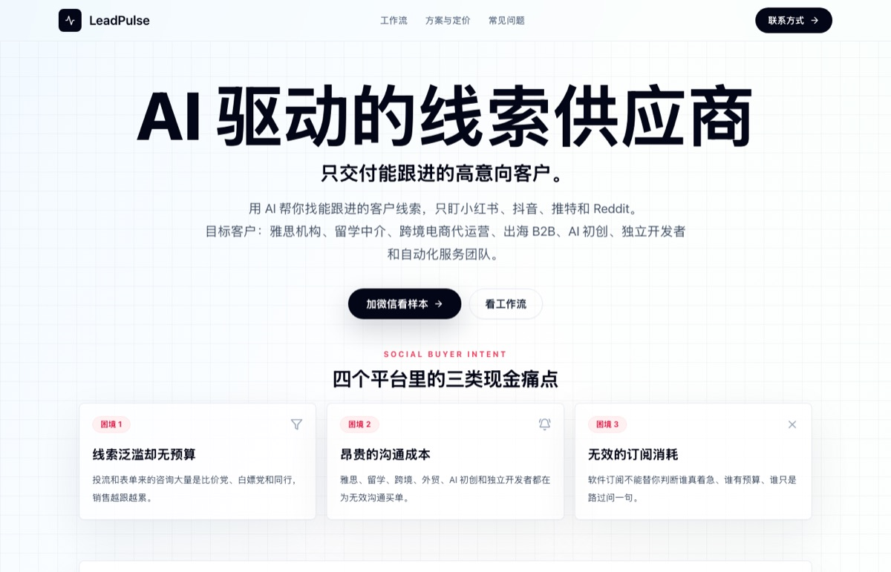
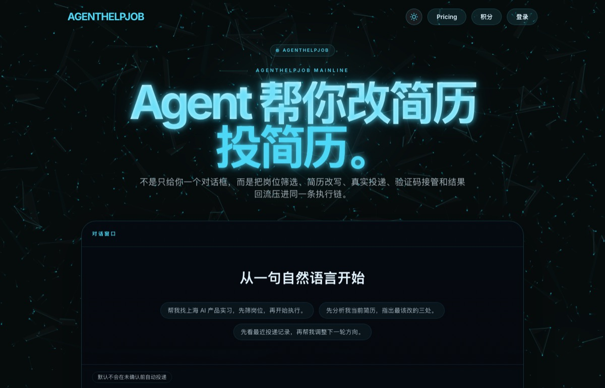
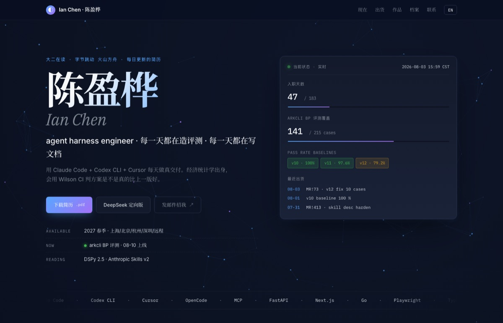

今年 20 岁，厦门大学经济统计学本科在读。这是我的第四段实习——之前在 DeepWisdom（MetaGPT 团队）、BYDFi 和卓创资讯做过 Agent、LLM 工具链、量化研究。
过去两个月在字节跳动火山方舟，主要在做两件事：把 Managed Agents 的 API 从零文档化——爬完 50 个接口的 schema、交付 10 篇数据面文档、拉多位研发做字段级审阅；同时独立起草并交付了 Coding / Agent Plan 官网文档的监控工具 MVP。7 月下旬开始转到 arkcli BytePlus 版本的评测框架，目前覆盖 22 个 skill、215 个测试用例，8 月 10 日上线。
我对 Agent 工程里那些没人愿意讲的部分特别感兴趣——工具调用怎么失败、上下文怎么漂移、评测怎么才算真的公平。业余在小红书和抖音更新，两平台各 1.3k / 1.9k 粉丝，定位是 AI 实习博主。这个网站本身是自动生成的——每晚扫飞书 + 拉 MR + 编译 Typst + 部署，48 天的历史都在这里。
精选作品
做过并且能被访问的东西

LeadPulse
线索提取 Agent。前端 Next.js，后端 FastAPI + LLM API。把复杂搜索变成可控的 Copilot 工作流。
leadpulseagi.com →
AgentHelpJob
求职辅助 Agent。JD 解析 → 简历匹配 → 材料生成 → 人工确认 → 投递追踪。低信任高决策成本场景的可控性设计。
agenthelpjob.com →
career-log · 你现在看的这个
每天凌晨自动扫飞书、拉 MR、备份工作记忆、渲染 Typst 简历、编译 PDF、部署 GitHub Pages。48 天历史都在仓库里，离职当天关电脑走人，简历流仍然完整。
github.com/emptyteabot/career-log →也做
- daily-digest每天扫 Reddit / Hacker News / X，用 Claude 摘中文简报，推到飞书。本机 launchd 常驻。
- yinghua-cortex个人签名 Agent，本机 launchd 15 分钟一次扫飞书，做摘要和决策提示，离线跑。
- Plan Doc Guardian字节实习自选项目，MVP V6.1 结项。扫火山方舟官网 Coding / Agent Plan 文档，检测断链、参数漂移、示例失效，输出证据驱动的补丁包。
- 多 Agent 可靠性评测DeepWisdom 期间。300 个样本对比 4 种架构，用 Wilson 区间和 McNemar 检验判断哪种架构真的更好。结论：多 Agent 只在错误相关性较低时才划算。
经历
做过的四段
-
2026-06 至今
字节跳动 · 火山方舟
技术文档实习生，Agent 工程方向。从零做 Managed Agents API 文档（50 个接口）、独立交付 Coding / Agent Plan 官网文档监控工具、目前主线是 arkcli BytePlus 版本评测框架，22 skill × 215 case，8 月 10 日上线。
-
2026-03 – 2026-04
DeepWisdom · MetaGPT
Agent 产品经理实习。做了 AgentHelpJob 和 LeadPulse 的长链路 Agent Loop 设计——解析 / 匹配 / 生成 / 人工确认 / 追踪的完整闭环，以及一套多 Agent 架构对照实验。
-
2025-12 – 2026-02
BYDFi · CEO 办公室
AI 效率实习。用 LLM API + Python 搭跨境业务扫描、翻译治理、竞品动态整理。4 小时黑客松独立完成 BYDFi AI Pro 全栈原型（AI 交易副驾 + 市场实时事件分析）。
-
2025-07 – 2025-12
卓创资讯
AI 工程师 / 算法实习。做铁矿石量化预测，基于 LightGBM + Optuna 优化基线并引入气象风险因子。自研两个内部 Agent，用来检测代码里的未来函数泄漏和 AI 生成代码的合规性。
教育：厦门大学 经济学院 · 经济统计学，2024 – 2028。统计训练覆盖实验设计、指标口径、显著性检验、回归、时间序列与模型评估。
联系
想聊就聊。24 小时内回。
- 邮箱 · 13398580812@163.com
- 手机 / 微信 · 13398580812
- GitHub · emptyteabot
- 小红书 · ian · 420404210
- 抖音 · @ian